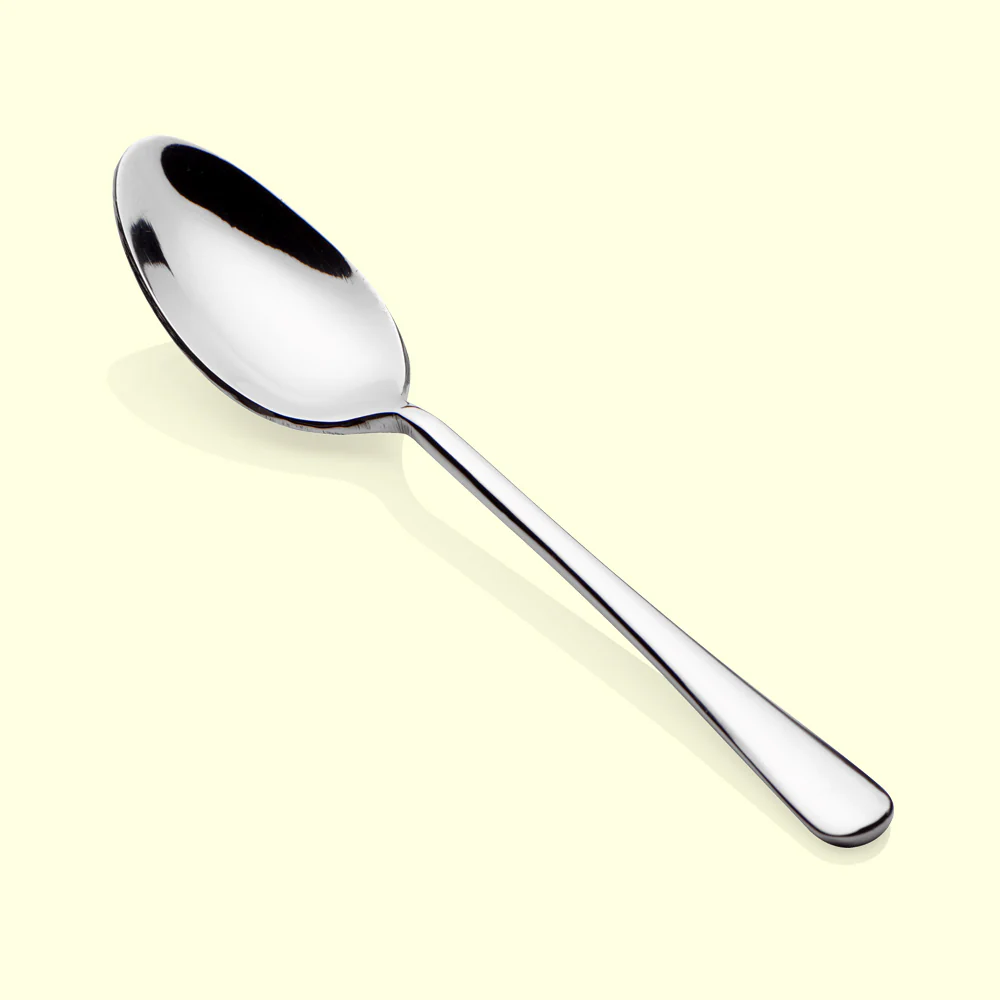
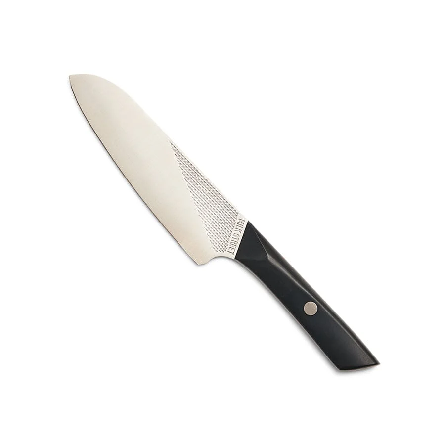
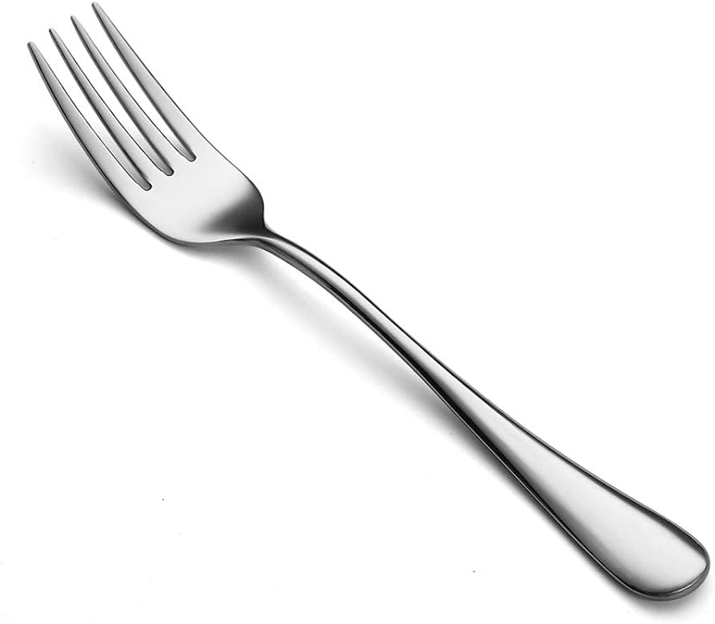
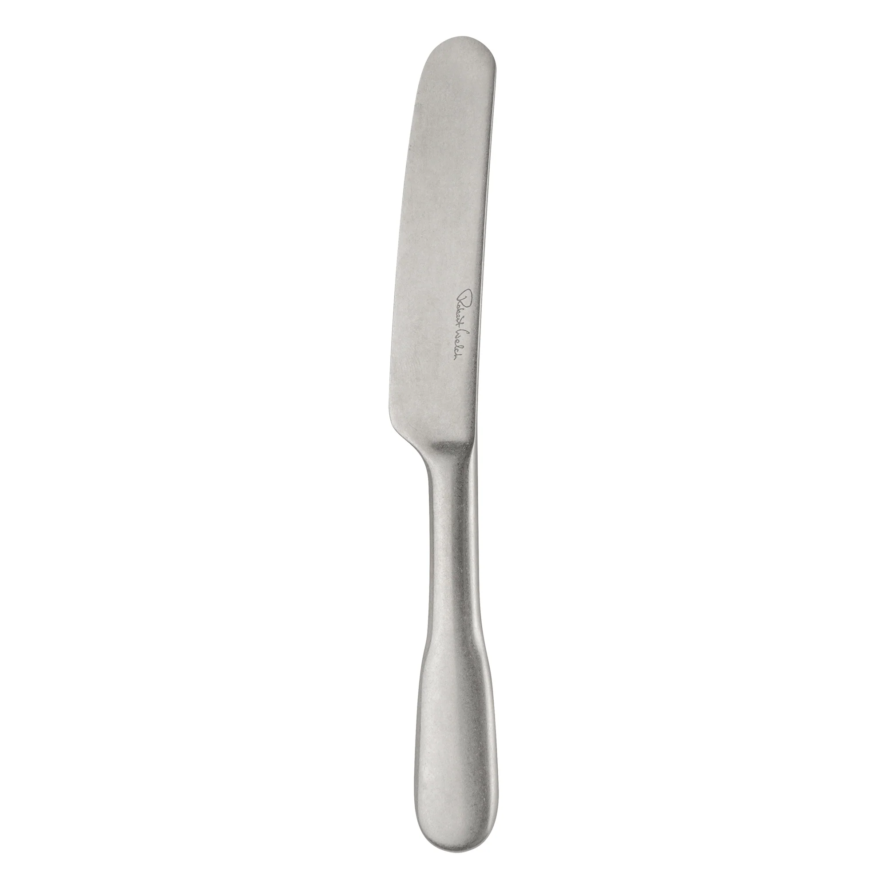
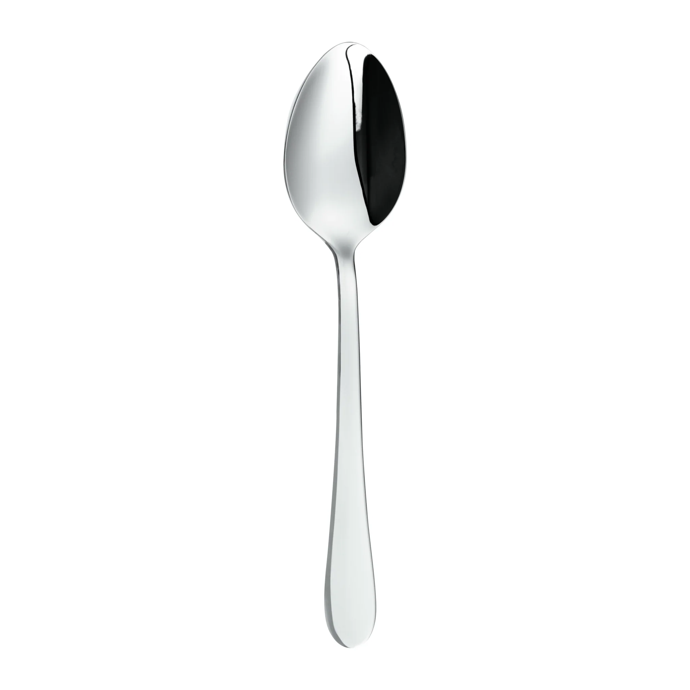
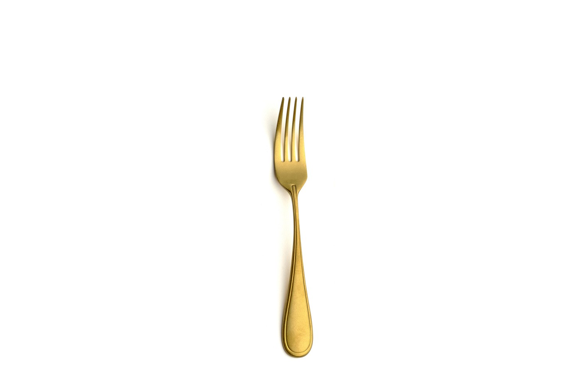

What is this page about? It is about information of some silverware.
Why did you use that name? Wikipedia is used for information, so that is why this is called this way, as this is information about silverware.
What is the purpose of it? To teach people about some silverware I handpicked (they are my favourite silverware).
Will you add more silverware to the page? Surely I will, though I will need to inform myself about the ones I will add later on.
Scenarios of Use
- Scenario 1: Casual User - A curious visitor clicks images to learn about various silverware types.
- Scenario 2: Collector - A silverware collector uses the information for their collection based on manufacturers.
- Scenario 3: Educational Tool - Teachers or students refer to this page for an educational resource about silverware history.

Spoons have been used since ancient times. The largest manufacturer is Cambridge Silversmiths Ltd, producing millions annually, mostly in stainless steel.

Forks were introduced in the 11th century and became popular in Europe during the Renaissance. Today, WMF Group leads in production.

Knives have been an essential tool for humans since prehistoric times. The most common material for modern knives is stainless steel.

Teaspoons are smaller than tablespoons and are commonly used for stirring tea or coffee. The term teaspoon also refers to a unit of volume measurement.

Salad forks are typically smaller and shorter. Gorham Silver is a well-known company for producing these utensils.

Butter knives are made with a rounded tip. Reed and Barton is a famous company producing these in various materials.

Teaspoons are small and typically used for stirring tea or coffee. They are often made from stainless steel or silver-plated metals.

Dessert forks are smaller than standard forks, with Cambridge Silversmiths being a major manufacturer.